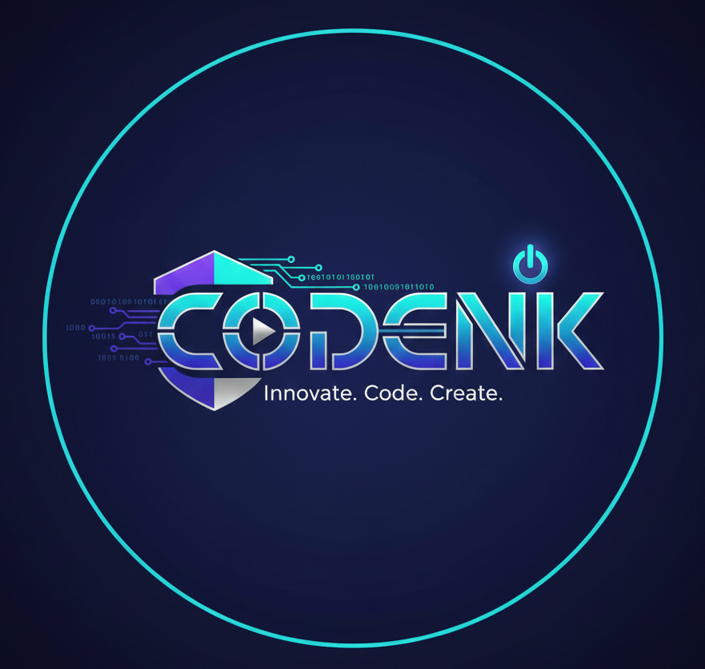
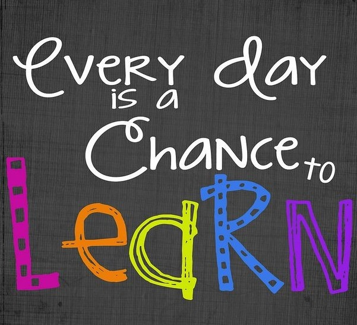

|  |
🎓 CODENK LEARNING CENTERLearn | Practice | Build Your Future |
🎯 CODENK Learning Center is a dedicated platform providing quality education in programming and computer technologies. It helps students build strong foundations in coding, logical thinking, and problem-solving skills, preparing them for academic success and future careers.
🌟 Mission: To empower students with practical knowledge in programming and technology to build real-world solutions.
🚀 Vision: To become a leading platform where students learn, practice, and excel in technology with confidence.
In an era dominated by technology, coding is no longer just a skill—it's a superpower. At CODENK Learning Center, we bridge the gap between academic theory and industry reality. Whether you are a student starting from scratch or a professional looking to upscale, we provide the environment you need to thrive.
🏆 Many of our students have successfully completed projects, gained internships, and started careers in IT, web development, and software engineering after learning at CODENK.
💡 By working on mini projects and exercises, students understand how technology is applied in real-world scenarios, boosting confidence and skills.
|
📌 CODENK also bridges the gap between theory and practice. Students work on assignments, exercises, and mini projects to understand how technology works in real scenarios. This prepares them for academic projects, internships, and entry-level tech opportunities. |
 |
We focus on the tools that the industry actually uses. At CODENK, you won’t just learn concepts — you will learn how to work confidently in professional software environments. 💻
🔧 Version Control: Learn how to use Git and GitHub to manage your code efficiently and collaborate with teams across the globe.
🗄️ Database Management: Master how to store, retrieve, and manage data using both SQL and NoSQL database systems.
☁️ Deployment: Understand how to take a project from your local computer and launch it live on the web using cloud hosting platforms.
🧩 Problem Solving: Develop Computational Thinking — the ability to break complex problems into small, manageable steps and solve them logically.
The market is full of people who can write code, but companies are looking for people who can build products. That’s where CODENK stands apart. Here is our Success Formula ✨
🎯 1. The Project-First Approach
Instead of long, boring lectures, we start with a goal —
“Today, we are building a weather app.”
As you build, you naturally learn the required code, keeping learning engaging and results-driven.
🏭 2. Industry Mentorship
Our instructors are not just teachers — they are active developers.
They share real-world shortcuts, best practices, and industry insights you won’t find in textbooks.
📂 3. The CODENK Portfolio
By the end of your course, you will have a professional digital portfolio that includes:
✅ A fully functional web application
📱 A mobile app prototype
📊 A data analysis report or an AI model
Completing our courses prepares you for a wide range of high-paying and future-ready career roles:
🐍 Python & AI: Machine Learning Engineer, Data Scientist, Automation Expert
🎨 HTML & CSS: UI/UX Designer, Front-End Developer, Freelance Web Creator
☕ Java & C++: Software Architect, Systems Programmer, Game Developer
☁️ Cloud Computing: Cloud Solutions Architect, DevOps Engineer, Security Specialist
⏳ Don’t let another year pass without upgrading your skills. The technology landscape is moving fast — and this is your moment to move faster. 🚀
🎯 Join CODENK Learning Center and get the head start you deserve. Remember, our 50% Discount is a limited-time offer to help you begin your journey!
📧 Email us today for a FREE syllabus:
codenklearning@gmail.com